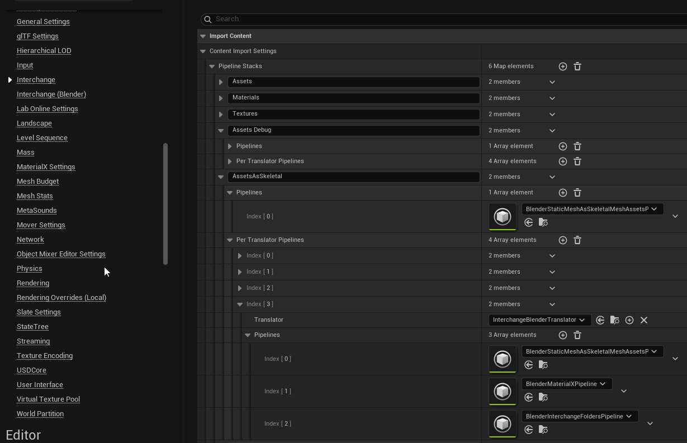
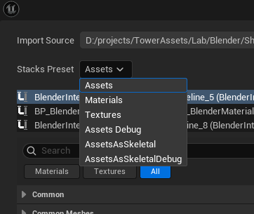
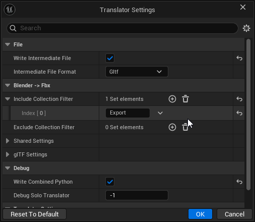

Import Settings
The settings for your import are laid out into 2 independent sections. Both settings affect how the file is processed. Take a look at pipeline settings first.
Pipeline Settings
This plugin ships with custom pipelines exposing more settings than unreal does out of the box. Pipelines allow you to control things like if meshes are merged into a single asset or imported as multiple separate assets. Each value can be reset to the pipeline default to by clicking the arrow on the left.

Saving Pipelines as Presets
The plugin ships with preconfigured pipelines for all common assets. You can change the default values by editing the pipelines that ship with the plugin or you can duplicate those assets and change the project configuration to use your pipelines instead of the default ones that ship with the plugin.
Pipeline settings are configured under the project settings: Project Settings > Engine > Interchange. Make sure you add the settings under the per-translator setting for the Blender Translator - which you should already have an entry for by installing this plugin.

Once you add your settings you should see an option appear under stack presets in the top-left corner of the import dialog. Note that you can add as many pipeline presets as you want which can be useful if you want to set up presets for different types of assets.

Pipeline Settings Notes
Pipeline assets are not blueprints. You cannot create them through the new blueprint menu. You must create them as an asset by right clicking > Misc > Interchange Pipeline Asset.
Assets will be imported with the same pipeline settings on re-import. This is usually desired but something to keep in mind.
Translator Settings
In addition to pipeline settings there are also translator settings. These settings affect how blender exports files for unreal to process.
You may be wondering what I mean by "how blender exports files to unreal engine". This plugin exports either FBX, USD or GLTF files from blender using blender's python API. By default we use GLTF because it has given the best results in the past. You can change which format is used by changing "Intermediate File Format".
In general the settings you see under translator settings will mirror the settings you would see if you exported a file from blender - with some settings hidden in cases where changing the setting would break export.
To edit translator settings can be opened by hitting the 3 dots in the top right.

Why Change Translator Settings
In general you will not have to change translator settings. However there are 3 main reasons you would want to mess with translator settings.
- You want to control what gets exported from blender. There are 2 useful settings called "Include Collection Filter" and "Exclude Collection Filter" that lets you restrict which blender collections get exported. These match collection names in blender against an optional allow list and deny list before exporting them. Regex support is enabled so you can also put patterns in here.
- You are having trouble with one file format and think another would do better. By default GLTF is used but perhaps you are more used to FBX or USD. Some formats also do better at certain asset types and switching the default translator can help get around issues.
- Something is not quite right on your export and you want to tweak the export settings for blender. In general all settings you could tweak in blender are exposed here so any fix you could do in blender you should be able to do here.
Some things to be aware of: - Translator settings persist between imports. Make sure you remember any settings you change. - Translator settings cannot be saved to pipelines like other settings. Prefer to fix issues in pipeline setting when possible
If you have persistent issues that can't be resolved always feel free to hit up our discord for support. https://discord.gg/fc2HYwJS